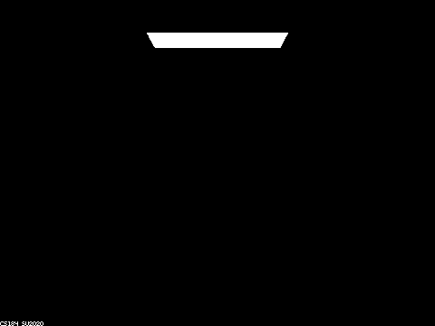
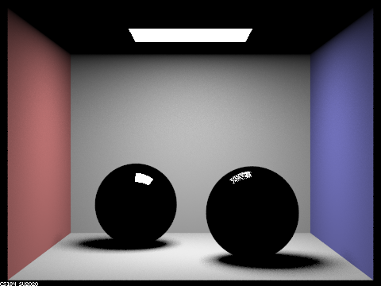
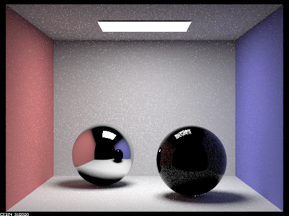
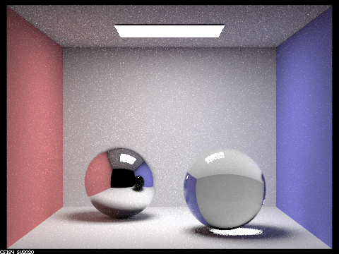
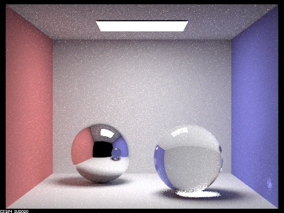
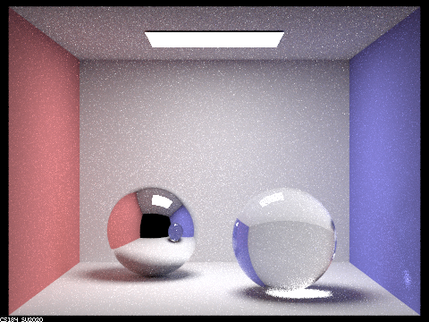
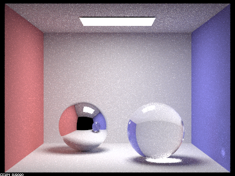

The multibounce for 0 max ray depth is just a black image with one light source since there is no bounce, we can't see the spheres.
The multibounce for 1 max ray depth is one bounce which is reflected by the spheres where we are able to see the reflection from the spheres of the light.
The multibounce for 2 max ray depth is two bounce which is seen in the spheres where we can now see the reflection of the walls in the left sphere and a distorted reflection on the right sphere.
The multibounce for 3 max ray depth is three bounce which we can see that the left sphere contains the reflection of the ceiling and the reflections of the walls on the right sphere. However, the reflection of the right sphere
on the left sphere is not visible yet.
The multibounce for 4 max ray depth is four bounces which we can see the bounce from the right sphere onto the left sphere then into the camera.
The multibounce for 5 and 100 max ray depth, there are no significant difference in the rendering.
The bounce number reveals how much of the reflection our object have, so if we ahve a glass/mirror object, we would expect to be able to see the multiple from the surrounding objects
and thus, we should be able to see those objects reflection on our sphere.

0 max ray depth

1 max ray depth

2 max ray depth

3 max ray depth

4 max ray depth

5 max ray depth

100 max ray depth
Part 4: Depth of fields
The difference between pinhole camera model and thin lens camera model is that with pinhole, the whole scene is focused which is due to the pinhole since when light reaches the pinhole, it expands outwards causing the whole scene to be focused. For thin lens camera model, we
can focus on certain part of the scene and blur our the surrounding scene since our lens is wider so when the light hits the lens, it expands inward to a certain part of the scene. As our aperture increases the smaller the size of our focus area, which is why we see that in the staff
solution, if we set the lens radius to 0, essentially we are doing the pinhole camera model.